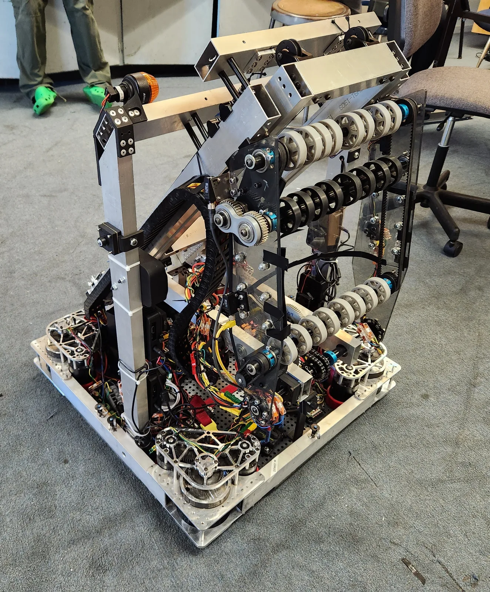

Plop
FIRST Robotics Competition — Charged Up Off-Season

My Role
Manufacturing Lead, functionally CAD Lead. Designed the chassis and adjusted the team's Grey-T elevator design so its stages stayed within the frame perimeter when retracted while still reaching all three grid levels. CAM'd and machined a large share of Plop's parts, growing the manufacturing subteam to 15+ machinists. Competed at Madtown Throwdown off-season event.
A development platform for next-gen technologies, built on SDS swerve drive. Plop uses a combined elevator/wrist system to rapidly and precisely score cones and cubes in all grid levels autonomously, even during teleop.